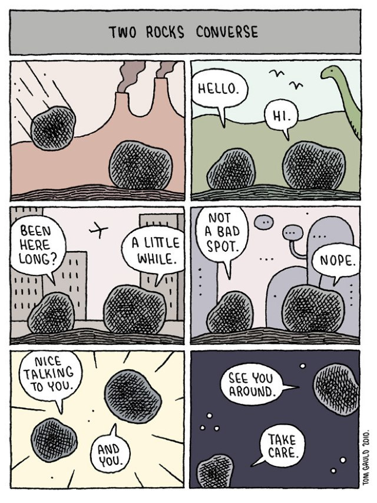

Timeframes
« How is a rock even formed? » is a question that is not asked very often; we are indeed aware of the cycle of water, but much less so of the « rock cycle », which forms the minerals we encounter every day.
Our Earth is comprised of chemical and rheological layers. The inner and outer core are mainly composed of iron and nickel, but the mantle and the crust, also called lithosphere, is largely composed of silicate rocks.
It is in the lithosphere that the tectonic plates are located, and it is also where rocks are made, then remade, in an infinite cycle. The process is not the same for all rocks (there are three different types) and of course the time to process them is also different.
The average lifespan of a rock is a complicated thing. If we’re talking a certain individual rock, then it may be between 10 000 years to hundreds of millions of years old. If we’re talking about the necessary minerals to make that certain rock (which also qualify as rocks), then their age is about tens of thousands of years to a couple billions years, all the way from when the Earth formed.
It is difficult to realise all those informations and the reality that rocks experiment compared to our own timeframe of, at most, a hundred years. Rocks become an alien being, that we do not associate with our life, or life itself
However, there’s no proof that minerals didn’t evolve overtime; on the contrary, since it was difficultly observable for us due to our life cycle, we never realised the innate intelligence of what we call « matter »1.
Indeed, a lot of evidence comes to prove that rocks have actually changed to adapt to life on Earth. Robert Hazen2, one of the most eminent figure in this research, advocates for this theory.
Today we know of 5,000 or more mineral species—each one a distinctive chemical composition and crystal structure. And of those 5,000, more than two thirds are the result of the changes that life has made to Earth3.
One of the most distinctive evidence of this theory is the way that minerals are formed today with the huge influence that Humans have on Earth.
We’re changing the geochemical cycle of virtually every element. We mine things, we build things, we shift things and we build chemical plants. One of the consequences of doing this is that new minerals arise.
There are minerals that only occur in mine dumps or acid mine drainages. There are new minerals that only occur on the timbers of mine supports. Landfills now have weathering products of old computer screens and iPhones, which are forming new minerals of rare earth elements that are only just being discovered.
